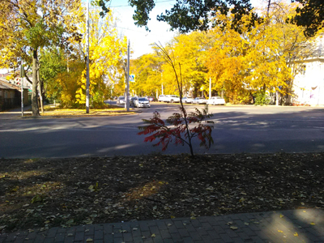
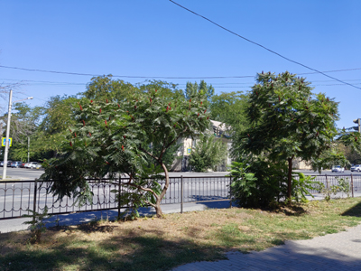
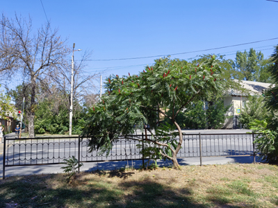

Сумах на улице Нариманова


С этой фотографии началась работа над проектом. Когда я только обдумывал идею проекта и решил, что надо для пробы повторить хотя бы одно фото, я искал что-то максимально простое — такое место, которое точно получится легко отыскать снова. Перекресток на фото знаком мне довольно хорошо, так что прийти туда снова и подобрать нужный ракурс казалось делом максимально простым.
Найти перекресток и правда не составило труда. А вот дальше меня поджидал сюрприз. Главным героем старого фото было небольшое дерево сумаха. Других приметных растений на переднем плане нет. Когда же я пришел делать новое фото, оказалось, что рядом вырос еще один сумах. Причем оба дерева с виду были примерно одного возраста. И находились они близко друг от друга, так что фон не слишком различался в зависимости от того, какое дерево оказывалось в центре кадра.


В итоге я сфотографировал оба дерева и уже придя домой внимательно сравнил их со старым фото. Всматривался не только в ракурс, но и в сами деревья. У сумаха на старом фото крона как будто формируется из трех крупных секций. И они имеют небольшой наклон влево. По этим признакам я опознал дерево в его нынешнем виде — тот же наклон и крона также будто из трех частей.


У старого фото нет какой-то особой предыстории, как и у большинства моих фото. Это просто кадр повседневности, внезапно выхваченный мозгом из череды видов, сменяющих друг друга во время пеших прогулок. Хотя я даже не помню точно, гулял ли я тогда или шел по каким-нибудь делам. Но стоял приятный октябрьский денек, солнце, пригревающее, но не палящее, подсвечивало раскрашенные осенью листья. Не было лишней сырости, как не было и сдувающего все ветра. И вот в такой чудесный день я вдруг заметил этот вид. Конечно, я не мог просто пройти мимо и не сделать фото на память. Тем более, на переднем плане сумах, а эти деревья мне всегда очень нравились.
До сих пор этот перекресток радует обилием зелени. От него вообще веет каким-то уютом, хотя как будто это самый обычный перекресток жилого квартала. Быть может, только для меня он выглядит так, потому что когда-то мне довелось увидеть ту прекрасную картину, которую я сохранил на этом старом фото.